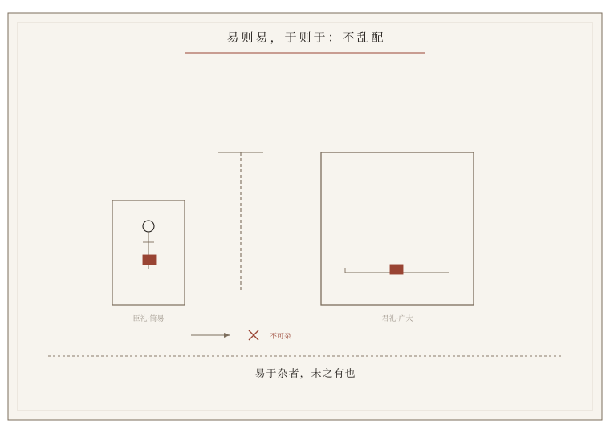

檀弓下 · 四·七十六 · 第 401 课
邾娄考公之丧，徐君使容居来吊、含，曰：「寡君使容居坐含，进侯玉。」其使容居以含。有司曰：「诸侯之来辱敝邑者，易则易，于则于，易于杂者，未之有也。」容居对曰：「容居闻之，事君不敢忘其君，亦不敢遗其祖。昔我先君驹王西讨，济于河，无所不用斯言也。容居，鲁人也，不敢忘其祖。」
说什么事：邾娄考公死，徐君派大夫容居来吊并致含，传话说：「寡君命容居坐含，进侯玉。」邾国有司拒绝：诸侯来敝邑，臣礼就按臣礼，君礼就按君礼，把两种混着来的，从来没有。容居答：事君不敢忘其君，也不敢遗其祖。从前我先君驹王西讨济河，没有一处不用这套话。容居是鲁钝之人，不敢忘祖。
落在哪一层：以「不乱配」为界。臣礼、君礼各自成套；混搭者，从来无有。
为何编在此位：上节论「合」，此节论「杂」。合者恰如其分，杂者错位而自以为有据。
【经】邾娄考公之丧，徐君使容居来吊、含，曰：「寡君使容居坐含，进侯玉。」其使容居以含。有司曰：「诸侯之来辱敝邑者，易则易，于则于，易于杂者，未之有也。」容居对曰：「容居闻之，事君不敢忘其君，亦不敢遗其祖。昔我先君驹王西讨，济于河，无所不用斯言也。容居，鲁人也，不敢忘其祖。」
【注】考公，隐公益之曾孙，考或为定。／吊且含。／欲亲含，非也。含不使贱者，君行则亲含，大夫归含耳。言侯玉者，时徐僣称王，自比天子。／易谓臣礼，于谓君礼，杂者容居以臣欲行君礼。徐自比天子，使大夫敌诸侯，有司拒之。／言我祖与今君于诸侯初如是，不闻义则服。驹王，徐先君僣号，容居，其子孙也。济，渡也。鲁，鲁钝也。言鲁钝者，欲自明不妄。
【疏】此一节论徐之僣礼之事。○「其使容居以含」者，此是记人录语，云其使容居奉玉以行含礼。邾人有司乃拒之曰：诸侯之来屈辱临于敝邑者，若是臣来，其礼简易者，则行臣之简易之礼。「于」谓广大。若君来，其礼广大者，则行君之广大之礼。「易于杂」者，谓应简易而为广大，实是臣而行君礼，是君臣杂乱者，未之有也，谓由来未有此礼。○凡实行含礼，未敛之前，以玉实口；士则主人亲含，大夫以上即使人含；若既敛已后至殡葬，其有含者，亲自致璧于柩及殡上者，谓之亲含；若但致命，以璧授主人，主人受之，谓之不亲含。
邾娄 即邾。
考公 邾君。注云「隐公益之曾孙」，「考或为定」。
吊、含 吊丧与致含。含，以玉实死者之口。
坐含 亲坐而含，谓亲行含礼。
侯玉 赐侯之玉。注云徐僣称王，以此自比天子。
有司 主礼之官。
易 简易，谓臣礼。
于 广大，谓君礼。疏云「于音近迂，迂是广大之义」。
杂 混用。
不敢遗其祖 不敢弃先祖之行事。
驹王 徐之先君，僣号者。
济于河 渡河而西讨。
鲁人 鲁钝之人。注云「鲁，鲁钝也」，非鲁国之人。
邾娄考公的丧事，徐君派容居来吊并致含，说：「寡君命容居亲坐行含，进献侯玉。」就命容居奉玉行含礼。邾国有司说：「诸侯屈临敝邑，是臣礼就按臣礼，是君礼就按君礼；把两种混起来，从来没有过。」容居答：「我听说，事君不敢忘其君，也不敢遗其祖。从前我先君驹王西讨，渡过黄河，没有一处不用这套话。容居是鲁钝之人，不敢忘祖。」
此章一场对拒。
徐以「坐含、侯玉」把臣礼做成君礼；邾有司一句「易则易，于则于」拒之；容居不认错，抬出先祖与「不敢忘祖」。
一方守界，一方守祖。界与祖相对，这一场便无解。
第一层 「吊且含」本是常礼 注云「吊且含」。
问题不在含，在「坐含」。 疏辨四种含极细：未敛以玉实口，士则主人亲含，大夫以上使人含；既敛之后亲致璧于柩者谓之亲含，但致命而璧授主人者谓之不亲含。
「坐含」者，欲亲耳——此正是君之礼。 大夫使人含，君乃亲含。
第二层 「侯玉」二字之僭 注云「言侯玉者，时徐僣称王，自比天子」。
徐既称王，则视邾为「侯」，故曰「进侯玉」。 一句之中，把自己抬成天子，把对方降成诸侯。
礼的僭，多不在器物，在一句称谓。
第三层 有司之拒 「易则易，于则于」——六个字，两两相对。
这是全篇最干净的句式。 不辩论，不指责，只说：各按各的来。
第四层 「杂者未之有也」 疏云「谓由来未有此礼」。
不是「不许」，是「没有过」。 礼之拒人，常用这一句：不是我不给你，是此事自古无例。
第五层 容居之答：一个软理由 他不说「我君当称王」，说「不敢忘其祖」。
僭之辞，往往借一个极正的理由。 「不敢忘祖」四字，任谁都不能驳。
第六层 「鲁人」自贬之巧 注云「鲁，鲁钝也」，疏云「欲自明不妄」——我若是个精明人，或会虚称先祖之善；我是鲁钝人，只知实说。
以自贬为自证，此一层尤须看破。 说「我笨」，是为了让「我说的是实话」成立。
第七层 有司拒而容居不改，事遂止 经不记结果。
《檀弓》记此，不为断案，为留一句可用的句式。 「易则易，于则于」——后可据此拒一切混搭。
与今日何干 今之越位，多冠以「不敢忘本」「不敢违先例」。
此章给一句：理由再正，也不能替你把位置挪正。
| 左 | 右 |
|---|---|
| 吊且含 | 常礼 |
| 坐含 | 欲亲含，君礼 |
| 进侯玉 | 自比天子 |
| 有司拒之 | 守界 |
| 易则易 | 臣礼简易 |
| 于则于 | 君礼广大 |
| 易于杂 | 由来未有 |
| 不敢忘其祖 | 僭之软理由 |
| 鲁人 | 鲁钝，自明不妄 |
画一幅左右分列的极简图示，视点平视。画面左侧画一个矮而窄的方框（示臣礼），框内画一个极小的人形，双手捧一小方玉。画面右侧画一个高而宽的方框（示君礼），框内画一张空着的坐席，席上置一小方玉，不画人。两框之间画一条竖线相隔，线上端画一道短横封口。两框之下画一条自左框指向右框的斜箭头，箭头中段压一道短叉，示「杂者未之有」。不画文字。赭色只用在那道短叉与右侧的玉上。
